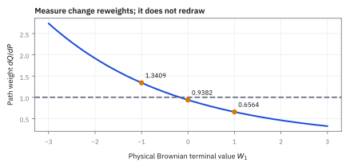
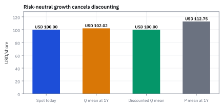
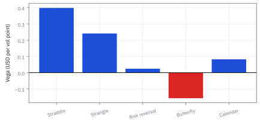
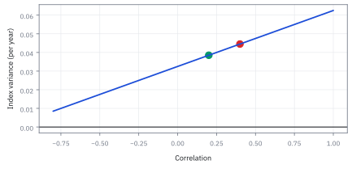

13.6 Volatility Trading Structures: the Desk Playbook
แกะกลยุทธ์สิทธิ์เป็นแต่ละขาก่อนดูว่ากำไรขาดทุนตรงไหน
หุ้น \$100 ความผันผวน 20% ซื้อ straddle strike 100 อายุ 3 เดือน 1,000 หน่วย จ่ายเท่าไร หุ้นต้องจบนอกช่วงไหนจึงกำไร และถ้าจบที่ 105 หรือ 115 ได้เสียเท่าไร?
เฉลย: จ่าย \$7.9755 ต่อหน่วย กำไรเมื่อจบต่ำกว่า 92.02 หรือสูงกว่า 107.98 จบที่ 105 เสีย \$2,975.52 จบที่ 115 ได้ \$7,024.48 เพราะต้องได้ premium คืนก่อน
ศัพท์ชุดแรก: ชื่อของชุดสัญญาที่โต๊ะเรียกกันทุกวัน
- straddle
- straddle คือซื้อ call และ put ที่ strike กับ expiry เดียวกัน ใช้ซื้อ convexity รอบจุดกลางโดยต้องจ่าย premium และเสีย time decay หากตลาดไม่ขยับพอ
- strangle
- strangle คือซื้อ put strike ต่ำกับ call strike สูงที่ expiry เดียวกัน ใช้ซื้อ tail movement ด้วย premium ต่ำกว่า straddle แต่ต้องขยับไกลกว่าจะเริ่มจ่าย
- risk reversal
- risk reversal คือซื้อ option ฝั่งหนึ่งและขายอีกฝั่งที่ต่าง strike ในตัวอย่างซื้อ call สูงและขาย put ต่ำ ใช้แสดงมุมมองทิศทางร่วมกับ skew ไม่ใช่ pure volatility trade
- butterfly
- butterfly คือซื้อ wing สองข้างและขาย option strike กลางสองหน่วยในอัตรา strike เท่ากัน ใช้ซื้อ payoff ที่กระจุกใกล้ strike กลางพร้อมจำกัดกำไรขาดทุน
- calendar spread
- calendar spread คือซื้อ option อายุยาวและขาย option strike เดียวอายุสั้น ใช้รับความต่าง term structure แต่ขาสั้นหมดอายุก่อน จึงไม่มี payoff terminal เดียวให้ลบตรง ๆ
- premium
-
คืออะไร: เงินที่จ่ายหรือรับในวันที่เปิดสถานะ
ใช้ทำอะไร: เป็นต้นทุนที่ต้องหักออกก่อนจึงจะเรียกว่ากำไร
ทำไมต้องแยกไว้ต่างหาก: เพราะมันเกิดวันแรกวันเดียว ส่วนอีกสองตัวข้างล่างเกิดตอนจบ การเอามาปนกันคือที่มาของกราฟที่วาดผิด
- payoff
-
คืออะไร: เงินที่สัญญาจ่ายให้ในวันหมดอายุ ตามที่เขียนไว้ในสัญญา
ใช้ทำอะไร: เป็นเส้นที่เราวาดในขั้นที่ 3 และ 2
ทำไมต้องแยกจากกำไร: เพราะเส้นนี้ไม่เคยติดลบสำหรับคนที่ซื้อ option แต่กำไรติดลบได้ ถ้าเห็นกราฟที่ไม่ติดลบแล้วคิดว่าไม่มีทางขาดทุน นั่นคืออ่านผิดเส้น
- profit and loss
-
คืออะไร: เงินที่ได้จริง คือ payoff หรือมูลค่าที่ปิดได้ ลบด้วยต้นทุนทั้งหมด เขียนย่อว่า P&L
ใช้ทำอะไร: เป็นเส้นที่ต้องดูจริงตอนตัดสินใจ
ทำไมต้องระวัง: เพราะเส้นนี้คือเส้น payoff ที่เลื่อนลงมาทั้งเส้นด้วยต้นทุน จุดที่มันตัดศูนย์จึงไม่ใช่ strike และไม่เคยเป็น
- break-even
-
คืออะไร: ระดับราคาหุ้นที่ทำให้กำไรสุทธิเป็นศูนย์พอดี
ใช้ทำอะไร: ใช้ตอบว่าหุ้นต้องขยับไปเท่าไรเราจึงจะเริ่มได้เงิน
ทำไมต้องคำนวณ: เพราะสำหรับชุดที่ซื้อทั้งสองฝั่ง ตลาดต้องขยับไกลกว่าที่คนส่วนใหญ่เดา การมีตัวเลขนี้เปลี่ยนความรู้สึกให้เป็นเงื่อนไขที่ตรวจได้
- bounded payoff
-
คืออะไร: เงินรับที่มีเพดานหรือมีพื้น ไม่โตหรือไม่ลงไปได้ไม่จำกัด
ใช้ทำอะไร: ใช้บอกว่าชุดไหนจำกัดความเสียหายไว้แล้ว ชุดไหนไม่จำกัด
ทำไมต้องดูก่อนเปิดสถานะ: เพราะชุดที่ไม่มีเพดานความเสียหาย อาจอยู่รอดได้เป็นปีแล้วล้างพอร์ตในวันเดียว
- at-the-money (ATM)
- สถานะที่ราคาใช้สิทธิเท่ากับราคาตลาดพอดี ใช้เป็นจุดอ้างอิงกลางของ smile เพราะเป็นจุดที่ option ไวต่อความผันผวนมากที่สุด และเป็นที่ที่ desk วัด vol กันเป็นมาตรฐาน
- swap
- สัญญาแลกกระแสเงินสดสองชุดกันตามตารางเวลาที่ตกลงไว้ ใช้เปลี่ยนภาระดอกเบี้ยลอยตัวเป็นคงที่ หรือแลกผลตอบแทนสินทรัพย์หนึ่งเป็นอีกอย่าง โดยไม่ต้องซื้อขายตัวสินทรัพย์จริง
สัญลักษณ์ที่ใช้ในหัวข้อนี้
| สัญลักษณ์ | ความหมาย | หน่วย |
|---|---|---|
| $S_0$ | ราคาหุ้นวันนี้ | USD |
| $S_T$ | ราคาหุ้นในวันหมดอายุ | USD |
| $K_i$ | strike ของขาที่ $i$ ชุดหนึ่งมีได้หลาย strike | USD |
| $T_i$ | วันหมดอายุของขาที่ $i$ ซึ่งไม่จำเป็นต้องเท่ากันทุกขา | ปี |
| $C(K,T)$ | ราคา call ที่ strike และอายุที่ระบุ | USD |
| $P(K,T)$ | ราคา put ที่ strike และอายุเดียวกัน | USD |
| $(x)^+$ | ตัดค่าติดลบทิ้งให้เหลือศูนย์ | ตาม $x$ |
| $n_i$ | จำนวนหน่วยของขาที่ $i$ พร้อมเครื่องหมาย บวกคือซื้อ ลบคือขาย | สัญญา |
| $H(S_T)$ | เงินรับรวมของทั้งชุดในวันหมดอายุ | USD |
| $V_0$ | เงินที่จ่ายหรือรับสุทธิในวันเปิดสถานะ | USD |
| $N,{\rm P\&L}_T$ | option units รวมที่ใช้ scale และกำไรขาดทุนวันสิ้นสุด | units, USD |
| $\Delta_i$ | delta ของขาที่ $i$ ก่อนใส่จำนวนหน่วย | ไม่มีหน่วย |
| $\Gamma_i$ | gamma ของขาที่ $i$ | USD⁻¹ |
| $\nu_i$ | vega ดิบของขาที่ $i$ | USD ต่อหน่วย $\sigma$ |
| $\Theta_i$ | theta ดิบของขาที่ $i$ | USD ต่อปี |
| $w_i$ | น้ำหนักของหุ้นตัวที่ $i$ ในดัชนี | ไม่มีหน่วย |
| $\sigma_i$ | ความผันผวนของหุ้นตัวที่ $i$ | ปี⁻¹ᐟ² |
| $\rho_{ij}$ | ความสัมพันธ์ระหว่างหุ้นคู่ที่ $i$ กับ $j$ เป็นตัวเดียวที่ชุด dispersion เดิมพัน | ไม่มีหน่วย |
| $\sigma_I$ | ความผันผวนของดัชนีทั้งตัว ซึ่งต่ำกว่าค่าเฉลี่ยขององค์ประกอบเสมอเมื่อความสัมพันธ์ไม่เต็มหนึ่ง | ปี⁻¹ᐟ² |
| $N_{\rm var}$ | variance notional สำหรับตัวอย่าง dispersion | USD ต่อ annualized variance หนึ่งหน่วย |
ที่มาที่ไป: จากสัญญาเดี่ยว สู่โครงสร้างที่แสดงมุมมองเฉพาะเจาะจง
การซื้อ option ตัวเดียวเป็นการรับความเสี่ยงหลายอย่างพร้อมกัน ทั้งทิศทาง ความผันผวน และเวลา ซึ่งมักไม่ใช่สิ่งที่ต้องการ
โต๊ะจึงประกอบหลายขาเข้าด้วยกัน เพื่อให้เหลือเฉพาะความเสี่ยงที่ต้องการรับจริง และตัดส่วนที่ไม่ต้องการออกไป
เช่นถ้ามั่นใจว่าตลาดจะเหวี่ยงแรงแต่ไม่รู้ทิศ ก็ประกอบโครงสร้างที่ได้กำไรทั้งขึ้นและลง
ราคาที่ต้องจ่ายสำหรับความแม่นยำนี้คือทุกขาต้องข้ามส่วนต่างราคาซื้อขายของตัวเอง โครงสร้างสี่ขาจึงจ่ายส่วนต่างสี่ครั้ง ซึ่งกินกำไรที่คาดไว้ไปมากกว่าที่คนคิด
ทำไมโต๊ะถึงประกอบขาหลายขาเข้าด้วยกัน — ที่มาทางประวัติศาสตร์
ก่อนยุค 1970 ถ้าอยากเดิมพันว่าหุ้นจะแกว่งแรง ต้องซื้อ option ทีละตัว แล้วยอมรับว่า payoff ขึ้นกับทิศทางด้วย
ราว ๆ หลัง Black–Scholes (1973) ที่ทำให้ตลาด option มีราคาอ้างอิงเดียวกัน เทรดเดอร์จึงเริ่มรวมขา call กับ put เข้าด้วยกัน เพื่อ 'ตัด' ความเสี่ยงทิศทางออกไปและเหลือแค่ความเสี่ยงที่ต้องการ
straddle เป็นชุดแรก ๆ ที่ได้ชื่อ เพราะ payoff ที่ spot เท่ากับ strike เป็นจุดต่ำสุด เหมือนคนนั่งคร่อม: ขาซ้ายคือ put ขาขวาคือ call ใครซื้อ straddle กำลังบอกว่า 'ราคาจะวิ่งแรง แต่ฉันไม่รู้ทิศ'
strangle, butterfly, risk reversal เป็นรุ่นถัดมาที่ปรับ payoff profile ให้ตรงกับมุมมองที่เฉพาะเจาะจงขึ้น ชื่อเหล่านี้ไม่ได้มาจากตำราเรียน แต่มาจากพื้น trading floor ที่ต้องสื่อสารในสองคำให้ทุกคนเข้าใจตรงกัน
Worked Example — โจทย์และสิ่งที่ให้มา
โจทย์ให้อะไรมาบ้าง: ใช้หุ้นสหรัฐฯ spot \$100, อัตราดอกเบี้ยศูนย์, ไม่มี dividend, implied volatility แบน 20% และ expiry แรก 0.25 ปี Straddle ใช้ strike 100, strangle ใช้ put 90 กับ call 110, risk reversal ซื้อ call 110 ขาย put 90, butterfly ซื้อ call 90 และ 110 พร้อมขาย call 100 สองหน่วย ส่วน calendar ซื้อ call 100 อายุ 0.50 ปีและขาย call 100 อายุ 0.25 ปี
ราคาเป็น Black–Scholes ต่อหุ้นเพื่อแยกโครงสร้างจาก market microstructure ตัวอย่าง P&L ใช้ 1,000 option units; desk จริงต้องแทน multiplier, commissions, bid–ask และ hedge cash flows
สัญญา legs และสิ่งที่ซื้อจริง
| Structure | Signed legs | Net premium (USD/share) | Risk interpretation |
|---|---|---|---|
| Long straddle | +P(100,T1)+C(100,T1) | 7.975522 | long gamma, long vega, short theta |
| Long strangle | +P(90,T1)+C(110,T1) | 1.666328 | cheaper tails, wider dead zone |
| Bullish risk reversal | -P(90,T1)+C(110,T1) | 0.241566 | long upside, short downside and skew-dependent |
| Long call butterfly | +C(90,T1)-2C(100,T1)+C(110,T1) | 3.690806 | bounded tent; gamma changes sign by spot |
| Long calendar | -C(100,T1)+C(100,T2) | 1.649437 | long relative back-expiry vega; front expiry event |
premium เป็น mid-model value ต่อหุ้นและเครื่องหมายบวกใน legs หมายถึงซื้อ ชื่อ long ไม่ได้แปลว่า Greek ทุกตัวบวกทุก spot
ทำไมต้องกดราคาทุกขาด้วยมือ
ชื่อ straddle ไม่ได้บอกราคา มันบอกแค่ว่ามีสองขา ราคาต้องคำนวณจาก Black–Scholes ทีละขา แล้วรวม ถ้าข้ามขั้นนี้แล้วจำราคามา จะไม่รู้ว่าราคาเปลี่ยนเมื่อ parameter เปลี่ยน และจะตรวจ P&L scenario ไม่ได้
ตัวอย่างนี้ตั้ง $r = 0$ กับ $S_0 = K$ เพื่อทำให้ $d_1$ ง่ายจนคิดในหัวได้ log ของ 1 เป็น 0 ดังนั้นค่านี้เหลือแค่ half-variance-time ที่หารด้วย volatility-root-time
ขั้นที่ 1 — ลองด้วยมือ: ราคาขาของ straddle จากสูตร 13.2
ตารางข้างบนบอกราคา แต่ยังไม่ได้แสดงที่มา ลองคำนวณขาที่ง่ายที่สุดด้วยมือ คือ call กับ put ที่ strike 100
log ของ 100/100 เป็นศูนย์ จึงเหลือแค่พจน์ครึ่งหนึ่งของ sigma กำลังสอง: 0.5 × 0.04 × 0.25 = 0.005 เอาตัวส่วน 0.10 มาหารได้ 0.05
call กับ put ราคาเท่ากันเพราะ strike เท่ากับ spot และดอกเบี้ยศูนย์ (parity ของหัวข้อ 13.4 ให้ P = C) รวมเป็น 7.975522 ตรงกับตารางข้างบน ขาอื่นในตารางคำนวณแบบเดียวกันโดยเปลี่ยน strike
ขั้นที่ 2 — ทำไม call กับ put ราคาเท่ากันพอดี
ข้อสรุปนี้ใช้ได้เฉพาะเมื่อ $r = 0$ และ $S_0 = K$ ถ้าดอกเบี้ยไม่เป็นศูนย์ call จะแพงกว่า put เล็กน้อยเสมอ เพราะ spot discounted มากกว่า strike discounted
put–call parity ให้ผลรวมของ put กับ spot discounted เท่ากับ call กับ strike discounted
เมื่อดอกเบี้ยเป็นศูนย์ discount factor เป็นหนึ่ง และ spot เท่ากับ strike ทำให้ $K$ หักกันหายทั้งสองข้าง เหลือ $P = C$ พอดี
นี่คือเหตุผลที่ straddle ATM ในตัวอย่างนี้มีราคาเท่ากับ สอง call พอดี: 2 × 3.987761 = 7.975522
ขั้นที่ 3 — นิยามของสองโครงสร้างแรก: เขียน payoff ที่วันหมดอายุ
สองก้อนนี้เป็น นิยาม ของโครงสร้างที่เราเลือกสร้าง ไม่ใช่ผลที่พิสูจน์ โครงสร้างทุกตัวในหัวข้อนี้ประกอบจาก call กับ put ไม่กี่ขา ตัวแรกซื้อทั้ง call และ put ที่ strike เดียวกัน จึงเริ่มจ่ายทันทีที่ราคาออกจากจุดนั้น ตัวที่สองย้าย strike ออกไปสองข้าง จึงมีช่วงตรงกลางที่ไม่จ่ายอะไรเลย แต่ซื้อถูกกว่า
straddle เริ่มจ่ายทันทีเมื่อออกจาก strike 100 ส่วน strangle มี payoff ศูนย์ระหว่าง 90 ถึง 110 และจ่ายเฉพาะเมื่อออกนอกปีก
ขั้นที่ 4 — ทำไม call+put payoff กลายเป็นค่าสัมบูรณ์
สิ่งที่ straddle กำลังซื้อจริง ๆ คือ ขนาดของการเคลื่อน ไม่ใช่ทิศทาง ยิ่ง spot วิ่งไกลจาก strike ยิ่งจ่ายมาก ทั้งขึ้นและลง นี่คือเหตุผลที่เทรดเดอร์ความผันผวนชอบ straddle
ตรวจด้วยตัวเลข: ถ้า strike คือ 100 และ spot จบที่ 118 สองขารวมกันจ่าย \$18 ถ้าจบที่ 82 ก็จ่าย \$18 เท่ากัน ผู้ถือจึงไม่ได้เดิมพันว่าราคาจะขึ้นหรือลง แต่เดิมพันว่ามันจะเคลื่อนแรงแค่ไหน และนั่นคือคำว่า volatility trade
คำถามแรกที่ต้องถามคือ ทำไม payoff ของ straddle ถึงเขียนเป็นค่าสัมบูรณ์ได้
แยกเป็นสองกรณี ถ้า spot จบเหนือ strike — call จ่าย put ไม่จ่าย ถ้า spot จบใต้ strike — put จ่าย call ไม่จ่าย ไม่มีทางที่ทั้งคู่จ่ายพร้อมกัน และไม่มีทางที่ทั้งคู่ไม่จ่ายเลย (ยกเว้น spot ชนพอดี ซึ่งเท่ากับศูนย์ทั้งคู่)
ผลลัพธ์คือระยะห่างจาก strike ไม่ว่าจะทิศไหน นั่นคือนิยามของค่าสัมบูรณ์
ขั้นที่ 5 — นิยามของอีกสองโครงสร้าง: แบบมีทิศทาง กับแบบจำกัดสองด้าน
สองก้อนนี้เป็น นิยาม ของโครงสร้างอีกสองแบบ ตัวแรกซื้อปีกข้างหนึ่งและขายอีกข้าง จึงได้กำไรเมื่อราคาไปทางที่เลือก และเสียเมื่อไปทางตรงข้าม ตัวที่สองซื้อสองปีกและขายตรงกลางสองเท่า ทำให้ได้รูปหลังคาที่สูงสุดตรงกลาง และเป็นศูนย์นอกช่วง จึงจำกัดทั้งกำไรและขาดทุน ขั้นถัดไปจะตรวจรูปเหล่านี้ด้วยตัวเลข
risk reversal ใน convention นี้เสียเงินเมื่อปลายทางต่ำมากและได้เมื่อสูงมาก ส่วน butterfly มี tent สูงสุด \$10 ที่ spot 100 และเป็นศูนย์นอก 90 ถึง 110
ขั้นที่ 6 — butterfly สร้างจาก bull spread ลบ bear spread
butterfly บอกว่า 'ราคาจะไม่ไปไหนไกล' กำไรสูงสุดอยู่ตรง strike กลาง และ payoff จำกัดทั้งขึ้นทั้งลง ต่างจาก straddle ที่บอกว่า 'ราคาจะวิ่งแรง'
butterfly ไม่ต้องจำเป็นสูตร สร้างได้จากสอง spread ที่รู้แล้ว
bull spread ได้กำไรเมื่อราคาขึ้นจาก 90 ไป 100 bear spread ได้กำไรเมื่อราคาลงจาก 110 ไป 100 ถ้าเอา bull spread ลบ bear spread จะเหลือ tent shape ที่สูงสุดตรงกลาง
ตรวจที่ 100: call 90 จ่าย 10 ส่วนอีกสองตัวจ่ายศูนย์ payoff = 10 ✓ ที่ปีกทั้งสองข้าง payoff = 0 ✓ จุดสำคัญคือ coefficient −2 มาจากการที่ strike 100 ถูกใช้สองครั้ง ทั้งใน bull spread และ bear spread
ขั้นที่ 7 — แยก payoff ออกจาก P&L
payoff กับกำไรขาดทุนไม่ใช่สิ่งเดียวกัน ต้องหักเงินที่จ่ายไปตอนเปิดออกก่อน คนพลาดตรงนี้บ่อยที่สุดเวลาอ่านกราฟ payoff
สำหรับ long structure จ่าย net premium V0 วันนี้ ในตัวอย่างไม่คิดดอกเบี้ยจึงลบ premium ตรง หาก r ไม่เป็นศูนย์ต้อง carry premium ถึง horizon เดียวกับ payoff
ขั้นที่ 8 — ตัวอย่าง: straddle payoff กับ P&L ต่างกันเท่าไร
ตัวเลข −2,975.52 กับ +7,024.48 มาจาก 1,000 สัญญา เทรดเดอร์มือใหม่ที่ลืมหัก premium จะนับกำไรเกินจริงและนับขาดทุนน้อยเกินจริง
ผู้เริ่มต้นมักคิดว่า straddle กำไรเมื่อราคาขยับ แต่ที่จริงต้องขยับ 'มากพอ' จ่ายค่า premium คืนก่อน
spot 105 ห่างจาก strike แค่ 5 แต่จ่าย premium ไป 7.98 ขาดทุน 2.98 ต่อ unit ส่วน spot 115 ห่าง 15 ได้คืน 7.02 ต่อ unit
บทเรียนคือ payoff กับ P&L ต่างกันด้วย premium และ premium เป็นต้นทุนที่แน่นอน ในขณะที่ payoff ไม่แน่นอน
ขั้นที่ 9 — หาจุดคุ้มทุนของ long straddle
ถามคำถามที่โต๊ะถามจริงทุกครั้ง คือราคาต้องขยับเท่าไรถึงจะเริ่มได้กำไร
straddle ต้องเคลื่อนเกิน premium \$7.97552234 จาก strike จึงเริ่มกำไร ณ expiry ภายใต้สมมติฐานไม่มีค่า hedge และ funding
ขั้นที่ 10 — derive จุดคุ้มทุนจากสมการ payoff = premium
width ของ break-even zone = $2V_0$ คือตัวเลขเดียวที่สรุปว่า straddle แพงแค่ไหน ยิ่ง vol สูง ยิ่ง premium แพง ยิ่งต้องเคลื่อนมาก
จุดคุ้มทุนคือจุดที่ payoff เท่ากับ premium พอดี ค่าสัมบูรณ์ให้สมการสองกรณี ซึ่งตรงกับแก้สมการเส้นตรงข้างละตัว
ระยะห่างทั้งสองข้างเท่ากันพอดี: $V_0$ ทั้งคู่ ดังนั้น break-even zone กว้าง $2V_0 = 15.95$ จุด ถ้า implied vol สูงกว่า premium จะแพง zone กว้างขึ้น ต้องเคลื่อนมากขึ้นกว่าจะคุ้ม
แล้วเอาไปใช้ทำอะไรได้จริงบ้าง
การประกอบขาหลายขาเป็นโครงสร้าง เป็นวิธีที่โต๊ะแสดงมุมมองเฉพาะเจาะจงโดยไม่รับความเสี่ยงอื่น
ใช้แสดงมุมมองว่าตลาดจะเหวี่ยงแรงหรือนิ่ง โดยไม่ต้องเดาทิศทาง
ใช้จำกัดขาดทุนสูงสุดไว้ล่วงหน้า ซึ่งเป็นสิ่งที่ลูกค้าสถาบันต้องการมากกว่ากำไรไม่จำกัด
ใช้ลดต้นทุนของการป้องกันความเสี่ยง โดยขายขาที่ไม่ต้องการเพื่อจ่ายค่าขาที่ต้องการ
ภาพ 13.6a — Payoff และ P&L ของชุดอายุเดียว

เส้น P&L หลังหัก premium แสดงว่า straddle กับ strangle ซื้อการเคลื่อนสองทิศ risk reversal มีทิศ และ butterfly มีกำไรจำกัดบริเวณกลาง การเทียบเส้นใช้ scale 1 หุ้นเพื่อไม่ซ่อน ratio
ขั้นที่ 11 — Calendar ต้องตั้งราคาขายาว ณ front expiry
calendar ต่างจากโครงสร้างอื่นตรงที่สองขาหมดอายุคนละวัน จะประเมินด้วย payoff ตอนหมดอายุอย่างเดียวไม่ได้
เมื่อ front call หมดอายุ back call ยังเหลือสามเดือน จึงต้อง mark-to-market ขายาวด้วย spot และ surface ตอนนั้น ไม่ใช่ใช้ terminal payoff ของสองขาพร้อมกัน
ภาพ 13.6b — Calendar มี residual time value ณ front expiry

เส้นสีน้ำเงินคือ back call ที่ยังเหลือ 0.25 ปี เส้นส้มคือ payoff ของ front call ส่วนต่างสูงรอบ strike เพราะขายาวยังมี time value Scenario นี้ถือ volatility 20% คงที่เพื่อแยกกลไก
ศัพท์ชุดที่สอง: จากชื่อชุดสู่ตัวเลขความเสี่ยงที่คำนวณได้
- dispersion
-
คืออะไร: การขายความผันผวนของดัชนี พร้อมกับซื้อความผันผวนของหุ้นรายตัวที่อยู่ในดัชนีนั้น
ใช้ทำอะไร: ใช้เดิมพันว่าหุ้นแต่ละตัวจะแยกกันเดินมากกว่าที่ราคาตลาดบอก
ทำไมถึงเป็นการเดิมพันเรื่องความสัมพันธ์: เพราะถ้าหุ้นทุกตัววิ่งพร้อมกัน ดัชนีจะแกว่งแรงเท่าหุ้น แต่ถ้าแต่ละตัวแยกกันเดิน ความผันผวนจะหักล้างกันในดัชนี ส่วนต่างระหว่างสองฝั่งจึงวัดความพร้อมเพรียงโดยตรง
- correlation exposure
-
คืออะไร: ความไวของพอร์ตต่อการที่หุ้นเคลื่อนไหวพร้อมกันมากขึ้นหรือน้อยลง
ใช้ทำอะไร: ใช้บอกว่าถ้าตลาดตื่นตระหนกจนทุกตัววิ่งทางเดียวกัน เราจะเสียเท่าไร
ทำไมต้องวัดแยก: เพราะนี่คือความเสี่ยงที่ทำให้ชุดนี้เจ็บที่สุด และมันไม่ปรากฏใน Greek ตัวใดที่เรียนมาในหัวข้อ 13.3 เลย
- leg
-
คืออะไร: สัญญาหนึ่งตัวในชุดที่ประกอบขึ้น ชุดหนึ่งมักมีสองถึงสี่ขา
ใช้ทำอะไร: ใช้แตกชื่อกลยุทธ์ออกเป็นรายการที่สั่งซื้อขายได้จริง
ทำไมต้องคิดเป็นขา: เพราะชื่อกลยุทธ์ไม่บอกเครื่องหมาย คนละโต๊ะอาจหมายถึงทิศตรงข้ามกันด้วยชื่อเดียวกัน
- ratio
-
คืออะไร: จำนวนหน่วยของแต่ละขาเทียบกัน เช่นหนึ่งต่อสองต่อหนึ่ง
ใช้ทำอะไร: ใช้กำหนดรูปร่างของเงินรับให้ได้อย่างที่ต้องการ
ทำไมต้องระบุ: เพราะเปลี่ยนอัตราส่วนนิดเดียว ชุดที่จำกัดความเสียหาย กลายเป็นชุดที่ไม่จำกัดได้ทันที
- net Greek
-
คืออะไร: ผลรวมความไวของทุกขา หลังใส่เครื่องหมายตามทิศของแต่ละขาแล้ว
ใช้ทำอะไร: ใช้ตอบว่าชุดนี้ตกลงแล้วซื้อหรือขายอะไรกันแน่
ทำไมต้องรวม: เพราะชื่อกลยุทธ์บอกแค่รูปทรง ส่วนตัวเลขรวมนี้บอกความเสี่ยงจริง และมันเปลี่ยนไปทุกวันแม้เราไม่ได้แตะสถานะเลย
- mark-to-market
-
คืออะไร: การตีมูลค่าสถานะด้วยราคาตลาดวันนี้ ไม่ใช่ราคาที่เราซื้อมา
ใช้ทำอะไร: ใช้ตอบว่าถ้าปิดสถานะวันนี้จะได้หรือเสียเท่าไร
ทำไมต้องทำทุกวัน: เพราะกำไรขาดทุนก่อนวันหมดอายุมีอยู่จริง และเป็นตัวที่กำหนดว่าเราจะถูกเรียกเงินประกันเพิ่มหรือไม่ ก่อนจะได้เห็นตอนจบ
- unwind
-
คืออะไร: การส่งคำสั่งทิศตรงข้ามทุกขาเพื่อปิดสถานะก่อนกำหนด
ใช้ทำอะไร: ใช้ออกจากสถานะเมื่อเหตุผลที่เปิดมันหมดไปแล้ว
ทำไมต้องคิดต้นทุนไว้ก่อน: เพราะต้องข้ามส่วนต่างราคาซื้อขายอีกครั้งทุกขา ชุดสี่ขาจึงเสียค่าผ่านทางแปดครั้งตลอดอายุของมัน
- covariance
-
คืออะไร: ตัวเลขที่บอกว่าสองสิ่งขยับไปทางเดียวกันมากแค่ไหน หน่วยของมันคือผลคูณของหน่วยทั้งสองตัว
ใช้ทำอะไร: เป็นก้อนที่ทำให้ variance ของดัชนีไม่เท่ากับผลรวมของส่วนประกอบ
ทำไมต้องใช้ตรงนี้: เพราะส่วนต่างทั้งหมดที่ชุด dispersion ไล่ล่า อยู่ในก้อนนี้ก้อนเดียว ถ้าก้อนนี้เป็นศูนย์ ชุดนี้ก็ไม่มีอะไรให้เทรด
- notional
-
คืออะไร: ขนาดอ้างอิงที่ใช้แปลงผลต่างเป็นเงิน
ใช้ทำอะไร: ใช้บอกว่าเมื่อ variance ขยับหนึ่งหน่วย เราได้หรือเสียกี่ USD
ทำไมต้องประกาศให้ชัด: เพราะสองฝั่งของชุด dispersion มีขนาดไม่เท่ากันโดยธรรมชาติ การจับคู่ขนาดผิดทำให้ชุดที่ตั้งใจเป็นกลางกลายเป็นการเดิมพันทิศทางเต็ม ๆ
ขั้นที่ 12 — รวม Greeks ตาม signed legs
Greeks ของโครงสร้างคือผลรวมของแต่ละขา โดยขาที่ขายต้องติดเครื่องหมายลบ สูตรข้างล่างแสดงว่าเหตุผลมีข้อเดียว คือ derivative กระจายเข้าไปในผลบวกได้ ไม่ใช่กฎพิเศษของ option
มูลค่าของโครงสร้างคือผลรวมถ่วงน้ำหนักของแต่ละขา ขาที่ขายมีจำนวนติดลบ ซึ่งเป็นการเลือกเครื่องหมายให้สะดวก ไม่ใช่กฎคณิตศาสตร์
หา derivative ของผลรวมได้ผลรวมของ derivative เพราะการหา derivative กระจายเข้าไปในผลบวกได้ และจำนวนขาเป็นเลขคงที่ที่เราตั้งเอง เหตุผลนี้ไม่ได้อาศัยอะไรเกี่ยวกับ option เลย จึงใช้ได้กับ derivative ทุกชนิด ไม่ว่าจะเทียบกับอะไร
ข้อควรระวังในทางปฏิบัติที่สูตรไม่ได้บอก ทุกขาต้องประเมินที่ราคา เวลา และผิวความผันผวนชุดเดียวกัน ถ้าใช้คนละชุด ผลรวมจะไม่มีความหมาย แม้สูตรจะถูกทุกตัวอักษร
ขั้นที่ 13 — derive: delta ของ ATM straddle ใกล้ศูนย์
ATM straddle มี delta ใกล้ศูนย์แต่ gamma สูงมาก นี่คือเหตุผลที่เทรดเดอร์ความผันผวนชอบใช้ เพราะไม่ต้องเดาทิศทาง แต่ได้กำไรจากการเคลื่อนไม่ว่าทิศไหน
delta ของ call คือ $\Phi(d_1)$ delta ของ put คือ $\Phi(d_1) - 1$ รวมสองขาได้ $2\Phi(d_1) - 1$
เมื่อ ATM, $d_1$ ใกล้ศูนย์ ดังนั้น $\Phi(d_1)$ ใกล้ 0.5 ทำให้ delta ของ straddle ใกล้ศูนย์ ไม่ใช่ศูนย์พอดี เพราะ $d_1 = 0.05$ ไม่ใช่ศูนย์ถาวร
gamma เป็นสองเท่าของ gamma call ตัวเดียว เพราะ gamma ของ call = gamma ของ put (จาก put–call parity ที่ derivative ลำดับสองของ $S$ หายไปหมด)
ภาพ 13.6c — Gamma ของชื่อเดียวเปลี่ยนตาม spot

straddle และ strangle มี gamma บวก แต่ butterfly กับ calendar เปลี่ยน sign ตามตำแหน่งและอายุ Risk reversal ยังมี residual gamma เพราะ strikes สองขาไม่สมมาตรบน distribution
ภาพ 13.6d — Net vega เป็นผลรวมที่ขึ้นกับอายุ

แท่งเป็น vega ต่อหนึ่ง volatility point ที่ spot 100 ชุด long premium ส่วนใหญ่ vega บวก แต่ butterfly ติดลบ ณ จุดกลางเพราะ short at-the-money calls สองขา Calendar บวกเพราะ back vega มากกว่า front vega ในสมมติฐานนี้
Dispersion: ชุดที่ชื่อสั้นแต่ hedge ยาว
สมมติดัชนีมีองค์ประกอบสองตัวน้ำหนักเท่ากัน volatility 20% กับ 30% และ correlation 0.4 หากขาย index variance ที่ระดับ implied แล้วซื้อ component variances ใน notional ที่ match contribution ตำแหน่งรับความเสี่ยง correlation ลดลง แต่โลกจริงยังมีน้ำหนักเปลี่ยน dividend, jump, rebalance และ single-name skew
ขั้นที่ 14 — แยก index variance เป็นส่วนเดี่ยวกับส่วนร่วม
dispersion เทรดความต่างระหว่างความผันผวนของดัชนีกับของหุ้นรายตัว ห้าบรรทัดนี้แยกสองส่วนออกจากกันให้ชัด และแสดงว่าส่วนที่ต่างกันคือพจน์ไขว้ล้วน ๆ ซึ่งเป็นเรื่องเดียวกับที่หัวข้อ 6.5 เรียกว่าพจน์ที่สูตรลัดทิ้งไป
ผลตอบแทนของดัชนีคือผลรวมถ่วงน้ำหนักของหุ้นที่อยู่ในนั้น ใส่ variance ทั้งก้อนแล้วกางออกเป็นสองกอง คือคู่ที่เป็นตัวเดียวกัน กับคู่ที่ต่างกัน ซึ่งเป็นรูปเดียวกับหัวข้อ 6.8 ทุกประการ
เขียน covariance ในภาษาของ correlation ตามนิยามในหัวข้อ 3.5 แล้วรวบคู่ที่นับซ้ำ คู่ $ij$ กับ $ji$ ให้ค่าเท่ากัน จึงนับครั้งเดียวแล้วคูณสอง
อ่านผลให้ตรง กองแรกคือความผันผวนของแต่ละตัว ซึ่งดัชนีกับ option รายตัวเห็นเหมือนกัน กองที่สองคือส่วนที่ขึ้นกับความเกาะกัน และเป็นสิ่งเดียวที่การเทรดแบบ dispersion เดิมพัน
การแยกสองกองนี้จึงไม่ใช่การจัดรูปเล่น ๆ มันบอกว่าเงินที่ได้หรือเสียมาจากตรงไหน
ทำไมถึงแยก index variance เป็นสองก้อนได้
index return เป็นผลรวมถ่วงน้ำหนัก variance ของผลรวมไม่ใช่ผลรวมของ variance ตามที่สร้างไว้ในหัวข้อ 6.5
กางวงเล็บของ $(w_1 r_1 + w_2 r_2)^2$ ออก ได้กำลังสองของตัวแรก กำลังสองของตัวหลัง และพจน์คูณไขว้ $2 w_1 w_2 r_1 r_2$ ถ้าสองตัวไม่สัมพันธ์กันเลย พจน์คูณไขว้เป็นศูนย์ variance ของ index จะเล็กกว่าที่คาด ยิ่ง correlation ต่ำ ยิ่งมี diversification benefit มาก
dispersion trade อาศัยจุดนี้: ขาย index variance (ซึ่งรวม diversification แล้ว) ซื้อ single-stock variance (ซึ่งไม่มี diversification) กำไรเมื่อ realized correlation ต่ำกว่าที่ market imply
ขั้นที่ 15 — คำนวณ implied index variance
แทนตัวเลขจริงเพื่อดูว่าดัชนีควรแกว่งเท่าไร ถ้าความสัมพันธ์เป็นไปตามที่ตลาดคิด
ทีละชิ้น: 0.25 คูณ 0.04 ได้ 0.01 และ 0.25 คูณ 0.09 ได้ 0.0225 รวมส่วนเดี่ยว 0.0325 ส่วนร่วม: 2(0.5)(0.5) = 0.5 คูณ 0.20 × 0.30 = 0.06 ได้ 0.03 คูณ 0.4 ได้ 0.012 รวม 0.0445 รากของมันคือ 0.210950
ส่วน single-name รวม 0.0325 และส่วน correlation 0.0120 จึงได้ index variance 0.0445 ต่อปีหรือความผันผวนประมาณ 21.0950 เปอร์เซ็นต์
ขั้นที่ 16 — ตรวจทีละก้อน: own terms กับ cross term
หลักง่าย ๆ: ยิ่ง correlation ต่ำ cross term ยิ่งเล็ก index vol ยิ่งต่ำกว่า single-stock vol มาก dispersion profit มาจากส่วนต่างนี้
แยกทีละชิ้นเพื่อตรวจ: ส่วนเดี่ยวของหุ้น 1 คือ 0.01 ของหุ้น 2 คือ 0.0225 รวม 0.0325 ถ้า correlation เป็นศูนย์ index variance จะเป็น 0.0325 ซึ่งน้อยกว่าค่าเฉลี่ยถ่วง (0.0650) เกือบครึ่ง
cross term เติม 0.0120 เข้ามา ดังนั้น index vol = 21.10% ต่ำกว่าค่าเฉลี่ยของ single-stock vol (25%) ส่วนต่างคือ diversification benefit ที่ dispersion trader ขาย
ขั้นที่ 17 — Scenario correlation ลดลง
ทดสอบว่าถ้าความเกาะกันลดลงจริงตามที่เราคาด กำไรขาดทุนจะออกมาเป็นอย่างไร สูตรข้างล่างเป็นการแทนตัวเลขลงในสูตรของขั้นที่ 14 สองครั้งแล้วลบกัน และผลที่ได้มาจากพจน์ไขว้อย่างเดียว ซึ่งเป็นสิ่งที่การเทรดแบบนี้ตั้งใจเดิมพัน
ตรวจข้อสรุปของขั้นที่ 14 ด้วยเลขจริง กองที่มาจากความผันผวนของแต่ละตัวไม่เปลี่ยน เพราะสมมติว่าหุ้นแต่ละตัวยังเหวี่ยงเท่าเดิม เปลี่ยนแค่ความเกาะกันอย่างเดียว
คำนวณกองที่สองที่ความเกาะกันเดิม โดยก้อน $2w_1w_2\sigma_1\sigma_2$ รวมกันได้ 0.03 บวกสองกองได้ค่าที่ใช้ล็อก strike ไว้ตั้งแต่ต้น แล้วทำซ้ำที่ความเกาะกันใหม่ กองแรกเท่าเดิม กองที่สองลดลงครึ่งหนึ่ง
ผลต่างจึงมาจากกองที่สองล้วน ๆ ตรงตามที่ขั้นที่ 14 ทำนายไว้ คูณ notional แล้วได้เงินจริง
สังเกตว่าทุกตัวเลขในสองบรรทัดสุดท้าย คำนวณมาจากบรรทัดบนทั้งหมด ไม่มีเลขใหม่โผล่เข้ามาแม้แต่ตัวเดียว
แปล $\Delta\sigma_I^2$ เป็นเงิน: ทำไมถึงคูณ notional ตรง ๆ ได้
variance swap จ่ายตาม variance ที่วัดได้ลบ strike ดังนั้น variance ที่ลดลง 0.0060 คือ P&L ตรง ๆ สำหรับคนที่ short index variance 1 ล้าน notional
1,000,000 × 0.0060 = \$6,000 เงินก้อนนี้มาจาก correlation ที่ลดลง 0.2 ไม่ได้มาจากการเปลี่ยนแปลงของความผันผวนแต่ละตัว ถ้า single-stock vol เปลี่ยนด้วย ต้องกลับไปคำนวณ own terms ใหม่
ข้อจำกัดสำคัญ: ตัวอย่างนี้สมมติว่า single-stock vol คงที่ ในตลาดจริง เมื่อ correlation ลดลง single-stock vol มักเพิ่มขึ้นด้วย (risk-off regime) ทำให้ P&L จริงไม่ตรงกับ 6,000
ภาพ 13.6e — Index variance เคลื่อนเป็นเส้นตรงกับ correlation

เมื่อความผันผวนและน้ำหนักคงที่ index variance เพิ่มตาม correlation markers แสดง 0.0385 ที่ correlation 0.2 และ 0.0445 ที่ 0.4 ความเป็นเส้นตรงหายได้เมื่อ volatilities กับน้ำหนักเคลื่อนพร้อมกัน
คำตอบ — straddle 1,000 หน่วย: ราคา จุดคุ้มทุน และกำไรขาดทุน
คำถาม: หุ้น \$100 ความผันผวน 20% ดอกเบี้ยศูนย์ ซื้อ straddle strike 100 อายุ 3 เดือน 1,000 หน่วย จ่ายเท่าไร หุ้นต้องจบนอกช่วงไหนจึงกำไร และจบที่ 105 หรือ 115 ได้เสียเท่าไร?
ของที่มี: ขั้นที่ 1 ถึง 10 และ 13
1. d₁ = 0.005 ÷ 0.10 = 0.05 call = 100(0.519939 − 0.480061) = 3.987761 put เท่ากันตาม parity straddle \$7.975522 ต่อหน่วย
2 จุดคุ้มทุน 100 ± 7.975522 คือ 92.024478 และ 107.975522 ช่วงที่ขาดทุนกว้าง \$15.95
3 จบที่ 105 payoff 5 เสีย \$2,975.52 จบที่ 115 payoff 15 ได้ \$7,024.48
4 ตอนเปิด delta ของชุดคือ 2(0.519939) − 1 = 0.0399 เกือบไม่มีทิศ gamma 0.0797 เป็นสองเท่าของ call ตัวเดียว
ตรวจเองใน 10 วินาที: straddle ATM ราว 0.8 × σ × √T × S = 0.8 × 0.2 × 0.5 × 100 = 8.0 ใกล้ 7.98
แปลว่าอะไร: straddle ซื้อขนาดของการเคลื่อน ไม่ใช่ทิศ ถ้าเชื่อว่าหุ้นจะวิ่งไกลกว่า \$8 ภายในสามเดือนจึงคุ้ม ถ้าอยากจ่ายถูกกว่าให้ใช้ strangle แลกกับช่วงตรงกลางที่ไม่จ่ายอะไร
โค้ดตรวจราคาทุกโครงสร้าง จุดคุ้มทุน Greek ของ straddle และ dispersion
import numpy as np
from scipy.stats import norm
def bs(S, K, T, s, kind="c", r=0.0):
d1 = (np.log(S / K) + (r + s * s / 2) * T) / (s * np.sqrt(T))
d2 = d1 - s * np.sqrt(T)
if kind == "c":
return S * norm.cdf(d1) - K * np.exp(-r * T) * norm.cdf(d2)
return K * np.exp(-r * T) * norm.cdf(-d2) - S * norm.cdf(-d1)
S, T1, T2, s = 100.0, 0.25, 0.50, 0.20
C = lambda K, T=T1: bs(S, K, T, s)
P = lambda K, T=T1: bs(S, K, T, s, "p")
straddle = C(100) + P(100)
assert abs(C(100) - 3.987761) < 1e-6 and abs(C(100) - P(100)) < 1e-12
assert abs(straddle - 7.975522) < 1e-6
assert abs(P(90) + C(110) - 1.666328) < 1e-6 # strangle
assert abs(-P(90) + C(110) - 0.241566) < 1e-6 # risk reversal
assert abs(C(90) - 2 * C(100) + C(110) - 3.690806) < 1e-6 # butterfly
assert abs(-C(100) + C(100, T2) - 1.649437) < 1e-6 # calendar
for ST, pnl in ((105, -2975.52), (115, 7024.48)):
assert abs(1000 * (abs(ST - 100) - straddle) - pnl) < 0.01
assert abs(100 - straddle - 92.024478) < 1e-6 and abs(100 + straddle - 107.975522) < 1e-6
for ST in (90, 100, 110): # butterfly tent
assert max(ST - 90, 0) - 2 * max(ST - 100, 0) + max(ST - 110, 0) == (10 if ST == 100 else 0)
d1 = 0.05
assert abs(2 * norm.cdf(d1) - 1 - 0.039878) < 1e-6
assert abs(2 * norm.pdf(d1) / (S * s * np.sqrt(T1)) - 0.079689) < 1e-6
own = 0.25 * 0.20**2 + 0.25 * 0.30**2
cross = lambda rho: 2 * 0.5 * 0.5 * 0.20 * 0.30 * rho
assert abs(own - 0.0325) < 1e-12 and abs(own + cross(0.4) - 0.0445) < 1e-12
assert abs(np.sqrt(0.0445) - 0.210950) < 1e-6
assert abs(1_000_000 * (cross(0.4) - cross(0.2)) - 6000) < 1e-6โค้ดคำนวณราคาทั้งห้าโครงสร้างจาก Black–Scholes ตรวจกำไรขาดทุนที่ 105 และ 115 จุดคุ้มทุน รูปหลังคาของ butterfly delta กับ gamma ของ straddle และตัวเลข dispersion 0.0445 กับ \$6,000
กับดัก: จำชื่อชุดแล้วลืม signed legs
คำว่า long butterfly ฟังเหมือนความเสี่ยงบวกทุกอย่าง แต่ gamma ณ spot กลางอาจติดลบ ชื่อกลยุทธ์เป็นชื่อเมนู ไม่ใช่ฉลากโภชนาการ—derivatives desk ยังต้องอ่านส่วนผสม วิธีป้องกันคือบันทึก strike, expiry, option type, ratio, sign, premium, multiplier และ scenario Greeks ทุกครั้ง
ข้อจำกัด: วิธีนี้สมมติอะไร และของจริงเป็นอย่างไร
| เรื่อง | วิธีนี้สมมติว่า | ของจริงเป็นอย่างไร | ผลที่ตามมาเวลาใช้งาน |
|---|---|---|---|
| ต้นทุนหลายขา | ต้นทุนคือผลรวมของแต่ละขา | ทุกขามีส่วนต่างราคาซื้อขายของตัวเอง | โครงสร้างสี่ขาจ่ายส่วนต่างสี่ครั้ง ซึ่งกินกำไรที่คาดไว้ไปมาก |
| การถือถึงหมดอายุ | กราฟ payoff คือผลลัพธ์ | ส่วนใหญ่ปิดก่อนหมดอายุ | ผลจริงขึ้นกับราคาระหว่างทาง ไม่ใช่แค่ราคาวันสุดท้าย |
| สภาพคล่อง | ปิดสถานะได้เมื่อต้องการ | ขาที่ไกลจากราคาปัจจุบันปิดยาก | อาจติดอยู่กับขาที่ไม่ต้องการในวันที่อยากออก |
แถวกลางสำคัญที่สุด กราฟ payoff ที่สวยงามอธิบายผลลัพธ์เฉพาะกรณีที่ถือจนหมดอายุเท่านั้น
สรุปที่ใช้ได้จริง
- โครงสร้างต้องนิยาม signed legs, ratio, strike, expiry, premium และ multiplier ก่อนคำนวณ
- payoff กับ P&L ต่างกันด้วย premium, funding, hedge cash flows และ unwind cost
- calendar ต้อง mark back option ณ front expiry; ห้ามลบ terminal payoffs คนละวัน
- net Greeks เป็นผลรวมที่เปลี่ยนกับ spot เวลา และ surface จึงต้องดู scenario ไม่ใช่ชื่อชุด
- dispersion รับ correlation พร้อม basis risks ของ weights, components, jumps และ execution